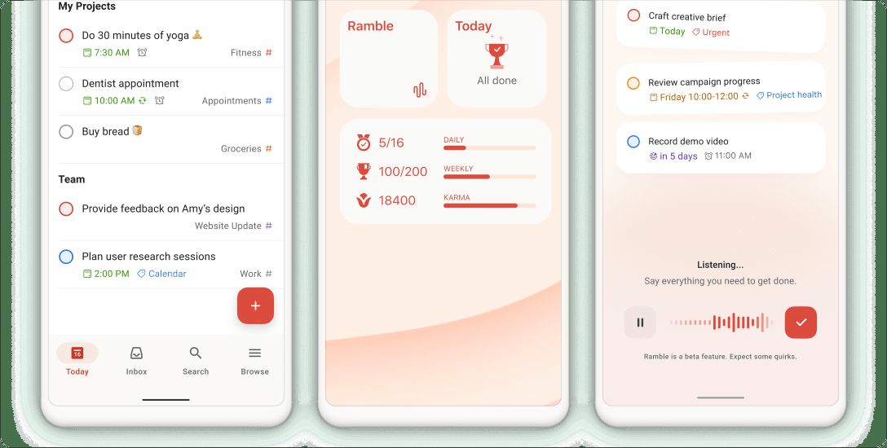

Todoist Review: A Superb List, Wandering Around a Project Series
7.1 Sensible Score, out of 10
Ratings by business type
Best suited to: individuals, freelancers, consultants and small teams whose work is a flow of dated tasks rather than a structured programme.

Sensible Stack: Streamlining business, whatever your size
Review status: USED IT, as a personal and work task list.
The short answer
Todoist is in this project management series the way a bicycle is in a truck roundup: excellent at what it is, and what it is, is a task list. Reviewers put it bluntly: it is still, at heart, a very well built list, and not a project management suite. For individuals and small task driven teams, its capture speed and calm design are close to unbeatable. For programme management, budgets, dependencies and progress up a hierarchy, it is simply not the tool, and it has never claimed to be.
What it is
Todoist organises work into projects, sections and tasks, with labels, filters, priorities and recurring dates, viewed as a list, a board or (on paid plans) a calendar. It has been refined by Doist since 2007 with unusual discipline: it does tasks, it does them fast, and it has resisted ballooning into everything else.
Where it wins
- Quick add, the best in the business. Type "chase the surveyor Friday p1 #Work" and the task files itself with a date and a priority. Capture takes under three seconds, which is why people actually keep using it in month six
- Calm. The UX/UI is clean, fast and identical everywhere. No rabbit holes, no template shops, no configuration weekends. In a series full of platforms that demand a hobby's worth of setup, Todoist asks for nothing
- Filters and labels with real power once you learn the syntax: every priority 1 task due this week, across every project, is a saved view away
- Recurring tasks handled properly, which sounds dull until a tool gets it wrong in front of a client
- Ratings that back the reputation: 4.5 out of 5 on G2 and 4.6 on Capterra
Where it frustrates
- It is not a project management tool. No budgets, no baselines, no dependency machinery worth the name, no resource view. The board view exists on every plan but reviewers call it basic, and the product is list first in its bones. If your work has a critical path, Todoist cannot see it
- Progress, in the sense this series keeps asking about, is personal: tasks done, streaks and Karma points. There is no percent complete rolling up a structure, because there is barely a structure
- The free plan's five project cap arrives quickly once work and home both move in. Most serious users are pushed to Pro within weeks, which is presumably the idea
- Prices rose in December 2025 for the first time since 2022, and some long time users are still grumbling about it, which tells you how quiet the pricing had been
The AI, and its price tag
Todoist now carries an Assist suite: Task Assist to tidy and break down tasks, Email Assist, and a voice capture feature called Ramble. They sit on the paid tiers, with sources disagreeing about exactly which features are Pro and which are Business only, so check the current packaging if AI is your reason to upgrade. Our duplication warning applies in an interesting direction here: Todoist's AI tidies your list, which a general AI subscription cannot do inside the app, so the overlap is smaller than most. It is also smaller in ambition than most.
Reporting and dashboards
The weakest in this series, by design. Todoist reports on you: completed tasks, productivity trends, streaks. There are no client facing dashboards and no executive roll ups, because the audience for a Todoist report is the person whose list it is. Fine for personal reviews; useless for showing a board the state of a programme.
Pricing
Checked November 2026, after the December 2025 increase. Beginner free: 5 active projects, list and board views, 3 filter views. Pro $5 per month billed annually ($7 monthly): 300 projects, calendar view, reminders and the Assist features. Business $8 per user per month billed annually ($10 monthly): a shared team workspace on top.
Verdict
Our reviewer's annoyance with Todoist was its presence in a project management conversation at all, and that is the fairest summary. Keep it in its lane and it is arguably the best tool in this entire series at its actual job. The sensible stack for a project manager might well be Todoist for the personal list, and one of the sterner tools above for the programme. Plenty of people quietly run exactly that.
Try it: Visit Todoist's official site.
Research note: Pricing checked against vendor pages and published reviews, November 2026. Usage history is the author's own.